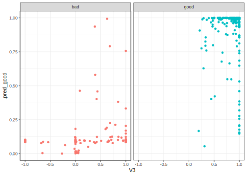

library(tidymodels)
library(mlbench)
data(Ionosphere)Model tuning via grid search
model tuning
SVMs
Choose hyperparameters for a model by training on a grid of many possible parameter values.
Introduction
To use code in this article, you will need to install the following packages: kernlab, mlbench, and tidymodels.
This article demonstrates how to tune a model using grid search. Many models have hyperparameters that can’t be learned directly from a single data set when training the model. Instead, we can train many models in a grid of possible hyperparameter values and see which ones turn out best.
Example data
To demonstrate model tuning, we’ll use the Ionosphere data in the mlbench package:
From ?Ionosphere:
This radar data was collected by a system in Goose Bay, Labrador. This system consists of a phased array of 16 high-frequency antennas with a total transmitted power on the order of 6.4 kilowatts. See the paper for more details. The targets were free electrons in the ionosphere. “good” radar returns are those showing evidence of some type of structure in the ionosphere. “bad” returns are those that do not; their signals pass through the ionosphere.
Received signals were processed using an autocorrelation function whose arguments are the time of a pulse and the pulse number. There were 17 pulse numbers for the Goose Bay system. Instances in this databse are described by 2 attributes per pulse number, corresponding to the complex values returned by the function resulting from the complex electromagnetic signal. See cited below for more details.
There are 43 predictors and a factor outcome. Two of the predictors are factors (V1 and V2) and the rest are numeric variables that have been scaled to a range of -1 to 1. Note that the two factor predictors have sparse distributions:
table(Ionosphere$V1)
#>
#> 0 1
#> 38 313
table(Ionosphere$V2)
#>
#> 0
#> 351There’s no point of putting V2 into any model since is is a zero-variance predictor. V1 is not but it could be if the resampling process ends up sampling all of the same value. Is this an issue? It might be since the standard R formula infrastructure fails when there is only a single observed value:
glm(Class ~ ., data = Ionosphere, family = binomial)
# Surprisingly, this doesn't help:
glm(Class ~ . - V2, data = Ionosphere, family = binomial)Let’s remove these two problematic variables:
Ionosphere <- Ionosphere %>% select(-V1, -V2)Inputs for the search
To demonstrate, we’ll fit a radial basis function support vector machine to these data and tune the SVM cost parameter and the \(\sigma\) parameter in the kernel function:
svm_mod <-
svm_rbf(cost = tune(), rbf_sigma = tune()) %>%
set_mode("classification") %>%
set_engine("kernlab")In this article, tuning will be demonstrated in two ways, using:
- a standard R formula, and
- a recipe.
Let’s create a simple recipe here:
iono_rec <-
recipe(Class ~ ., data = Ionosphere) %>%
# remove any zero variance predictors
step_zv(all_predictors()) %>%
# remove any linear combinations
step_lincomb(all_numeric())The only other required item for tuning is a resampling strategy as defined by an rsample object. Let’s demonstrate using basic bootstrapping:
set.seed(4943)
iono_rs <- bootstraps(Ionosphere, times = 30)Optional inputs
An optional step for model tuning is to specify which metrics should be computed using the out-of-sample predictions. For classification, the default is to calculate the log-likelihood statistic and overall accuracy. Instead of the defaults, the area under the ROC curve will be used. To do this, a yardstick package function can be used to create a metric set:
roc_vals <- metric_set(roc_auc)If no grid or parameters are provided, a set of 10 hyperparameters are created using a space-filling design (via a Latin hypercube). A grid can be given in a data frame where the parameters are in columns and parameter combinations are in rows. Here, the default will be used.
Also, a control object can be passed that specifies different aspects of the search. Here, the verbose option is turned off and the option to save the out-of-sample predictions is turned on.
ctrl <- control_grid(verbose = FALSE, save_pred = TRUE)Executing with a formula
First, we can use the formula interface:
set.seed(35)
formula_res <-
svm_mod %>%
tune_grid(
Class ~ .,
resamples = iono_rs,
metrics = roc_vals,
control = ctrl
)
formula_res
#> # Tuning results
#> # Bootstrap sampling
#> # A tibble: 30 × 5
#> splits id .metrics .notes .predictions
#> <list> <chr> <list> <list> <list>
#> 1 <split [351/120]> Bootstrap01 <tibble [10 × 6]> <tibble [0 × 3]> <tibble>
#> 2 <split [351/130]> Bootstrap02 <tibble [10 × 6]> <tibble [0 × 3]> <tibble>
#> 3 <split [351/137]> Bootstrap03 <tibble [10 × 6]> <tibble [0 × 3]> <tibble>
#> 4 <split [351/141]> Bootstrap04 <tibble [10 × 6]> <tibble [0 × 3]> <tibble>
#> 5 <split [351/131]> Bootstrap05 <tibble [10 × 6]> <tibble [0 × 3]> <tibble>
#> 6 <split [351/131]> Bootstrap06 <tibble [10 × 6]> <tibble [0 × 3]> <tibble>
#> 7 <split [351/127]> Bootstrap07 <tibble [10 × 6]> <tibble [0 × 3]> <tibble>
#> 8 <split [351/123]> Bootstrap08 <tibble [10 × 6]> <tibble [0 × 3]> <tibble>
#> 9 <split [351/131]> Bootstrap09 <tibble [10 × 6]> <tibble [0 × 3]> <tibble>
#> 10 <split [351/117]> Bootstrap10 <tibble [10 × 6]> <tibble [0 × 3]> <tibble>
#> # ℹ 20 more rowsThe .metrics column contains tibbles of the performance metrics for each tuning parameter combination:
formula_res %>%
select(.metrics) %>%
slice(1) %>%
pull(1)
#> [[1]]
#> # A tibble: 10 × 6
#> cost rbf_sigma .metric .estimator .estimate .config
#> <dbl> <dbl> <chr> <chr> <dbl> <chr>
#> 1 0.00849 1.11e-10 roc_auc binary 0.815 Preprocessor1_Model01
#> 2 0.176 7.28e- 8 roc_auc binary 0.839 Preprocessor1_Model02
#> 3 14.9 3.93e- 4 roc_auc binary 0.870 Preprocessor1_Model03
#> 4 5.51 2.10e- 3 roc_auc binary 0.919 Preprocessor1_Model04
#> 5 1.87 3.53e- 7 roc_auc binary 0.838 Preprocessor1_Model05
#> 6 0.00719 1.45e- 5 roc_auc binary 0.832 Preprocessor1_Model06
#> 7 0.00114 8.41e- 2 roc_auc binary 0.969 Preprocessor1_Model07
#> 8 0.950 1.74e- 1 roc_auc binary 0.984 Preprocessor1_Model08
#> 9 0.189 3.13e- 6 roc_auc binary 0.832 Preprocessor1_Model09
#> 10 0.0364 4.96e- 9 roc_auc binary 0.839 Preprocessor1_Model10To get the final resampling estimates, the collect_metrics() function can be used on the grid object:
estimates <- collect_metrics(formula_res)
estimates
#> # A tibble: 10 × 8
#> cost rbf_sigma .metric .estimator mean n std_err .config
#> <dbl> <dbl> <chr> <chr> <dbl> <int> <dbl> <chr>
#> 1 0.00849 1.11e-10 roc_auc binary 0.822 30 0.00718 Preprocessor1_Mode…
#> 2 0.176 7.28e- 8 roc_auc binary 0.871 30 0.00525 Preprocessor1_Mode…
#> 3 14.9 3.93e- 4 roc_auc binary 0.916 30 0.00497 Preprocessor1_Mode…
#> 4 5.51 2.10e- 3 roc_auc binary 0.960 30 0.00378 Preprocessor1_Mode…
#> 5 1.87 3.53e- 7 roc_auc binary 0.871 30 0.00524 Preprocessor1_Mode…
#> 6 0.00719 1.45e- 5 roc_auc binary 0.871 30 0.00534 Preprocessor1_Mode…
#> 7 0.00114 8.41e- 2 roc_auc binary 0.966 30 0.00301 Preprocessor1_Mode…
#> 8 0.950 1.74e- 1 roc_auc binary 0.979 30 0.00204 Preprocessor1_Mode…
#> 9 0.189 3.13e- 6 roc_auc binary 0.871 30 0.00536 Preprocessor1_Mode…
#> 10 0.0364 4.96e- 9 roc_auc binary 0.871 30 0.00537 Preprocessor1_Mode…The top combinations are:
show_best(formula_res, metric = "roc_auc")
#> # A tibble: 5 × 8
#> cost rbf_sigma .metric .estimator mean n std_err .config
#> <dbl> <dbl> <chr> <chr> <dbl> <int> <dbl> <chr>
#> 1 0.950 0.174 roc_auc binary 0.979 30 0.00204 Preprocessor1_Model…
#> 2 0.00114 0.0841 roc_auc binary 0.966 30 0.00301 Preprocessor1_Model…
#> 3 5.51 0.00210 roc_auc binary 0.960 30 0.00378 Preprocessor1_Model…
#> 4 14.9 0.000393 roc_auc binary 0.916 30 0.00497 Preprocessor1_Model…
#> 5 0.00719 0.0000145 roc_auc binary 0.871 30 0.00534 Preprocessor1_Model…Executing with a recipe
Next, we can use the same syntax but pass a recipe in as the pre-processor argument:
set.seed(325)
recipe_res <-
svm_mod %>%
tune_grid(
iono_rec,
resamples = iono_rs,
metrics = roc_vals,
control = ctrl
)
recipe_res
#> # Tuning results
#> # Bootstrap sampling
#> # A tibble: 30 × 5
#> splits id .metrics .notes .predictions
#> <list> <chr> <list> <list> <list>
#> 1 <split [351/120]> Bootstrap01 <tibble [10 × 6]> <tibble [0 × 3]> <tibble>
#> 2 <split [351/130]> Bootstrap02 <tibble [10 × 6]> <tibble [0 × 3]> <tibble>
#> 3 <split [351/137]> Bootstrap03 <tibble [10 × 6]> <tibble [0 × 3]> <tibble>
#> 4 <split [351/141]> Bootstrap04 <tibble [10 × 6]> <tibble [0 × 3]> <tibble>
#> 5 <split [351/131]> Bootstrap05 <tibble [10 × 6]> <tibble [0 × 3]> <tibble>
#> 6 <split [351/131]> Bootstrap06 <tibble [10 × 6]> <tibble [0 × 3]> <tibble>
#> 7 <split [351/127]> Bootstrap07 <tibble [10 × 6]> <tibble [0 × 3]> <tibble>
#> 8 <split [351/123]> Bootstrap08 <tibble [10 × 6]> <tibble [0 × 3]> <tibble>
#> 9 <split [351/131]> Bootstrap09 <tibble [10 × 6]> <tibble [0 × 3]> <tibble>
#> 10 <split [351/117]> Bootstrap10 <tibble [10 × 6]> <tibble [0 × 3]> <tibble>
#> # ℹ 20 more rowsThe best setting here is:
show_best(recipe_res, metric = "roc_auc")
#> # A tibble: 5 × 8
#> cost rbf_sigma .metric .estimator mean n std_err .config
#> <dbl> <dbl> <chr> <chr> <dbl> <int> <dbl> <chr>
#> 1 15.6 0.182 roc_auc binary 0.981 30 0.00213 Preprocessor1_Model04
#> 2 0.385 0.0276 roc_auc binary 0.978 30 0.00222 Preprocessor1_Model03
#> 3 0.143 0.00243 roc_auc binary 0.930 30 0.00443 Preprocessor1_Model06
#> 4 0.841 0.000691 roc_auc binary 0.892 30 0.00504 Preprocessor1_Model07
#> 5 0.0499 0.0000335 roc_auc binary 0.872 30 0.00521 Preprocessor1_Model08Out-of-sample predictions
If we used save_pred = TRUE to keep the out-of-sample predictions for each resample during tuning, we can obtain those predictions, along with the tuning parameters and resample identifier, using collect_predictions():
collect_predictions(recipe_res)
#> # A tibble: 38,740 × 8
#> id .pred_bad .pred_good .row cost rbf_sigma Class .config
#> <chr> <dbl> <dbl> <int> <dbl> <dbl> <fct> <chr>
#> 1 Bootstrap01 0.333 0.667 1 0.00296 0.00000383 good Preprocessor…
#> 2 Bootstrap01 0.333 0.667 9 0.00296 0.00000383 good Preprocessor…
#> 3 Bootstrap01 0.333 0.667 10 0.00296 0.00000383 bad Preprocessor…
#> 4 Bootstrap01 0.333 0.667 12 0.00296 0.00000383 bad Preprocessor…
#> 5 Bootstrap01 0.333 0.667 14 0.00296 0.00000383 bad Preprocessor…
#> 6 Bootstrap01 0.333 0.667 15 0.00296 0.00000383 good Preprocessor…
#> 7 Bootstrap01 0.333 0.667 16 0.00296 0.00000383 bad Preprocessor…
#> 8 Bootstrap01 0.334 0.666 22 0.00296 0.00000383 bad Preprocessor…
#> 9 Bootstrap01 0.333 0.667 23 0.00296 0.00000383 good Preprocessor…
#> 10 Bootstrap01 0.334 0.666 24 0.00296 0.00000383 bad Preprocessor…
#> # ℹ 38,730 more rowsWe can obtain the hold-out sets for all the resamples augmented with the predictions using augment(), which provides opportunities for flexible visualization of model results:
augment(recipe_res) %>%
ggplot(aes(V3, .pred_good, color = Class)) +
geom_point(show.legend = FALSE) +
facet_wrap(~Class)
Session information
#> ─ Session info ─────────────────────────────────────────────────────
#> setting value
#> version R version 4.3.0 (2023-04-21)
#> os macOS Monterey 12.6
#> system aarch64, darwin20
#> ui X11
#> language (EN)
#> collate en_US.UTF-8
#> ctype en_US.UTF-8
#> tz America/Los_Angeles
#> date 2023-05-25
#> pandoc 3.1.1 @ /Applications/RStudio.app/Contents/Resources/app/quarto/bin/tools/ (via rmarkdown)
#>
#> ─ Packages ─────────────────────────────────────────────────────────
#> package * version date (UTC) lib source
#> broom * 1.0.4 2023-03-11 [1] CRAN (R 4.3.0)
#> dials * 1.2.0 2023-04-03 [1] CRAN (R 4.3.0)
#> dplyr * 1.1.2 2023-04-20 [1] CRAN (R 4.3.0)
#> ggplot2 * 3.4.2 2023-04-03 [1] CRAN (R 4.3.0)
#> infer * 1.0.4 2022-12-02 [1] CRAN (R 4.3.0)
#> kernlab * 0.9-32 2023-01-31 [1] CRAN (R 4.3.0)
#> mlbench * 2.1-3.1 2023-05-05 [1] CRAN (R 4.3.0)
#> parsnip * 1.1.0 2023-04-12 [1] CRAN (R 4.3.0)
#> purrr * 1.0.1 2023-01-10 [1] CRAN (R 4.3.0)
#> recipes * 1.0.6 2023-04-25 [1] CRAN (R 4.3.0)
#> rlang 1.1.1 2023-04-28 [1] CRAN (R 4.3.0)
#> rsample * 1.1.1 2022-12-07 [1] CRAN (R 4.3.0)
#> tibble * 3.2.1 2023-03-20 [1] CRAN (R 4.3.0)
#> tidymodels * 1.1.0 2023-05-01 [1] CRAN (R 4.3.0)
#> tune * 1.1.1 2023-04-11 [1] CRAN (R 4.3.0)
#> workflows * 1.1.3 2023-02-22 [1] CRAN (R 4.3.0)
#> yardstick * 1.2.0 2023-04-21 [1] CRAN (R 4.3.0)
#>
#> [1] /Users/emilhvitfeldt/Library/R/arm64/4.3/library
#> [2] /Library/Frameworks/R.framework/Versions/4.3-arm64/Resources/library
#>
#> ────────────────────────────────────────────────────────────────────